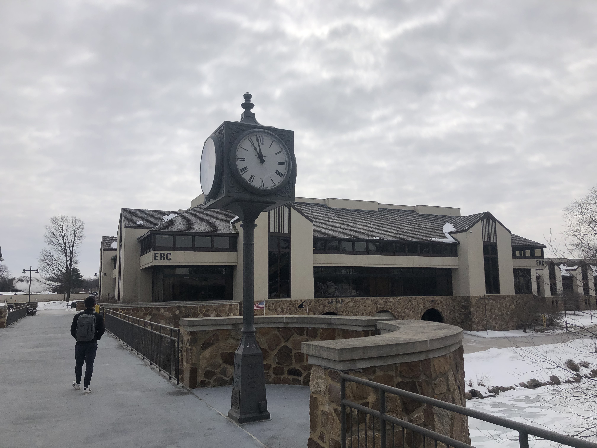
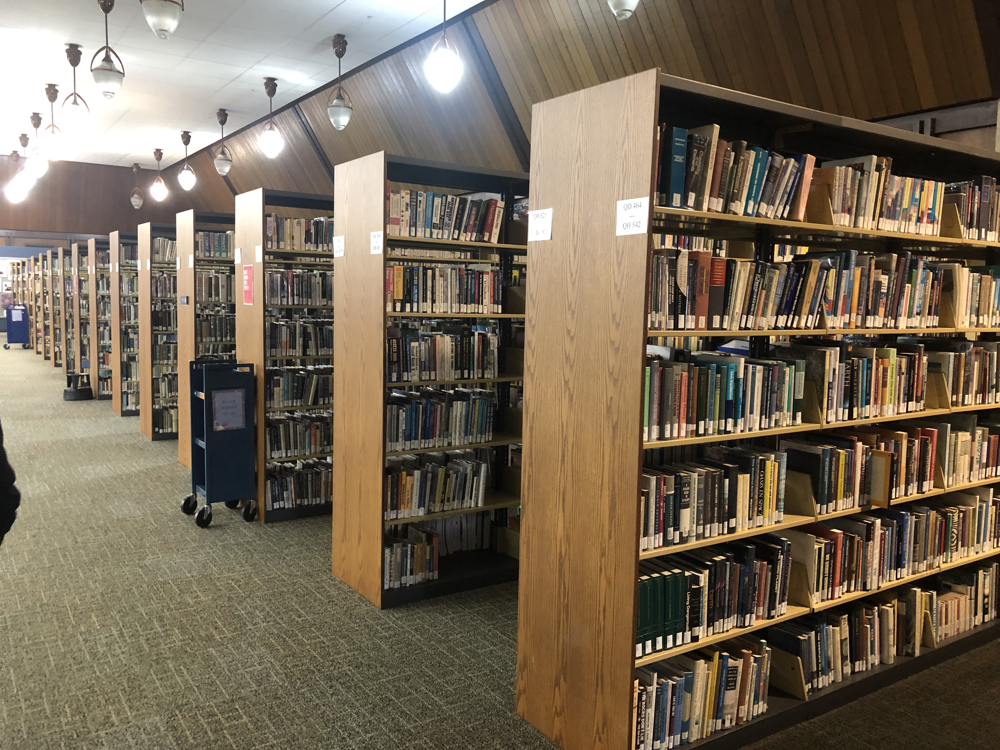

Welcome To
Rock Valley College
An Experience You Won't Regret
Going to Rock Valley College is a great way to be economic safe, gain helpful experience, and experience a great academic environment. Rock Valley College is a great way to gain college credit, save money, and not travel too far from home. By becoming a student at Rock Valley, you gain access to its numerous resources with includes but is not limited to; ability to use the campus’s library and its multiple resources, access to multiple computer labs all around campus, access to various locations around campus for both recreational and academic purposes.
Rock Valley College is also a great way metaphorically tip your foot in the water. While at Rock Valley College, you will mostly be taking college level courses that can later transfer to other colleges if that’s the way you want to go. Why spend thousands of more dollars at a more expensive 4-year institution to figure out that you don’t like what your studying when you can spend a lot less money here at Rock Valley making sure that path is the right one for you.
All in all, Rock Valley College is a great place to begin your academic career. While at Rock Valley you will have multiple resources to help you succeed and help you reach your future goals. I doubt that you will find the Rock Valley experience anything other than exemplary.
Services
We here at Rock Valley College want to make sure that each and every one of our students have the resources that they need in order to succeed in all of there classes. Once you become a member of the Rock Valley College family you also gain access to the numerous resources we offer, most of which are free.
The world is changing, technology is used more today than ever before. In order to adapt, many of our classes have online components to them, that help build our student's technology skills. However, we know that not everyone has a way to reach the internet from home. For that reason, we have multiple locations, right here on campus, where you can use a computer and access the net.
Another incredible service we offer here at Rock Valley College is multiple different ways of getting help on your schoolwork. Let’s be honest, math can get rather complex from time to time. Any math question you have can be answered at the MathLab, located in the basement of the JCSM. If you are having trouble on an essay, just pay a visit to the Writing Center, located in the Student Center. At the Writing Center, you can have English Professors give you advice and pointers on how to better your writing. This is just a small portion of the resources you gain access to when you join the Rock Valley family.
Rock Valley's Culinary Experience
Here at Rock Valley College, you have multiple choices of on campus and off campus dining. As pictured above, we have a Meg's Daily Grind right on campus. Meg’s Daily Grind is located in the ERC, a very easy to reach location. We also have both a Papa Johns and Subway located on campus. Both of these places are great choices for a quick and cheap bite to eat. If you’re ever very hungry, and you only have a small break between two classes, Subway and Papa Johns are great places for quick food that will get you back to class on time.
The great thing about Rock Valley is that you’re not limited to the dining options here on campus. Rock Valley is located at a terrific spot, where some of Rockford’s and Loves Park’s greatest dining options are only minutes away. Restaurants like Beef-a-Roo, House of India, and Buddies Burgers are only minutes away.
I remember not too long ago, I skipped breakfast before my nine-o’clock class and did not have a break until around three in the afternoon. By the time three rolled by I was starving, and I knew just the place that could fulfill my appetite. I decided to go to “Golden Chopsticks”, one of my favorite restaurants, a trip that is usually around 40 minutes from my house, took only a surprising 10 minutes to reach from Rock Valley.
On Campus Ski Resort
Here at Rock Valley College, we want all our students to not just pass but to have fun on the journey to their future success. That is why we have our very own ski resort right on campus. Prices are reduced for Rock Valley Students.
Pictures of our Beautiful Campus

-

Ground Floor of JCSM -

Hard Working Students at the Math Lab -

Beautiful Art from some of our Art Students -

Clock on Bridge -

Some of the Machines our Engineering Students gain experience from -

A small section of our knowledge dense Library -

A gorgeous painting from a student here at Rock Valley -

Just one of the many different exhibits of art and science here at RVC
{kind=link}
{kind=link}
Contact Main Departments
| Department Name | Phone |
|---|---|
| Academic Advising | 815-921-4100 |
| Academic Affairs | 815-921-4035 |
| Adult Education | 815-921-2000 |
| Athletics | 815-921-3800 |
| Book Store | 815-921-1680 |
| Disability Services | 815-921-2356 |
| Early College | 815-921-4080 |
| Financial Aid | 815-921-4150 |
| Info Center | 815-921-4636 |
| Library | 815-921-4600 |
| Testing Center | 815-921-2380 |
| Workforce Connection | 815-921-2270 |